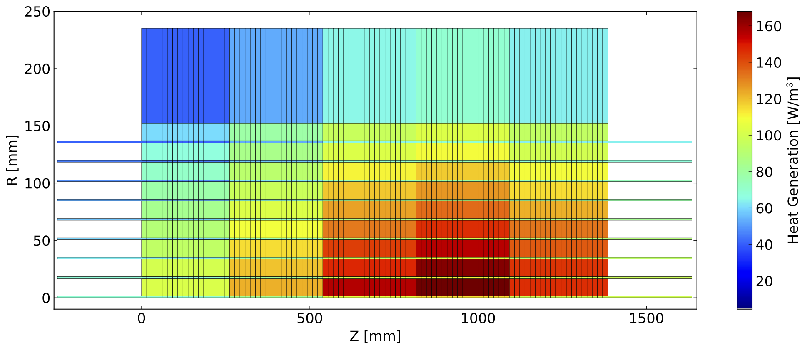
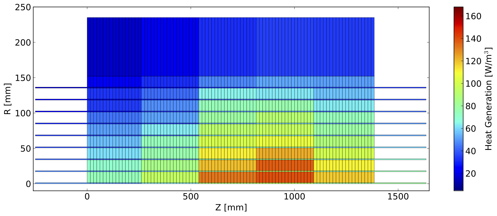
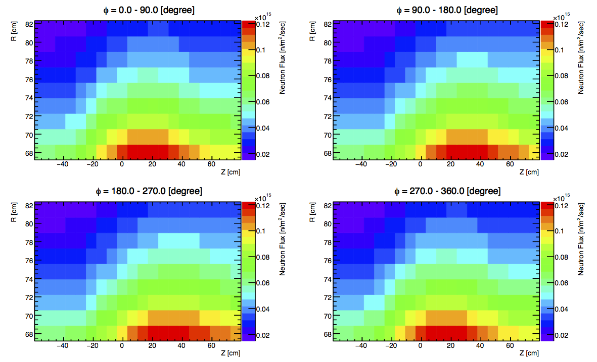
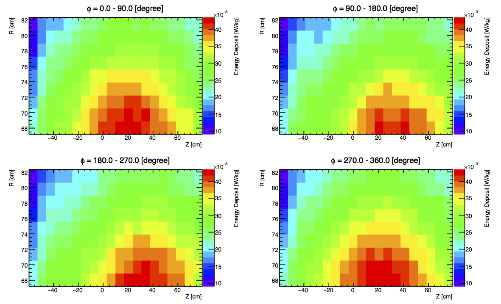

2. Degradation of Thermal Conduction¶
2.1. Radiation Map¶
The thermal conduction analysis is calculated with the input of both neutron fluence and energy deposit map from the Monte Carlo simulation. The maps are interpolated into the thermal conduction with the cell’s coordinate. Figure as follows shows the heat generation of CS1 coil calculated from a simple geometry (right) and realistic geometry (left) after interpolation.
|  |  |
{kind=link}
{kind=link}
Compared the older simulation for pion capture solenoid, which is only implemented the radiation shielding and coil, although, the newest result gives few higher peak energy deposit, the total heat load increases. The thermal conduction simulation has been done to confirm the difference of the radiation map can affect the coil temperature or not. The figure Fig. 2.1 shows the result, and the maximum temperature when uses the radiation input of realistic model grows up to 7 K at 90 day operation. Apparently, the radiation map calculated from the realistic model must be chosen for the thermal conduction simulation.
{kind=link}
2.1.1. Radiation Map for the Thermal Analysis¶
From the study of the radiation map, we conclude the map calculated realistic model must be used for the thermal analysis. Considering the map used for the previous study has rough mesh, in the figure, both of the neutron and energy deposit map are optimized to the mesh of 20 \(\times\) 4 \(\times\) 9 along the Z, \(\phi\) and R, respectivelty.
|  |  |
{kind=link}
{kind=link}